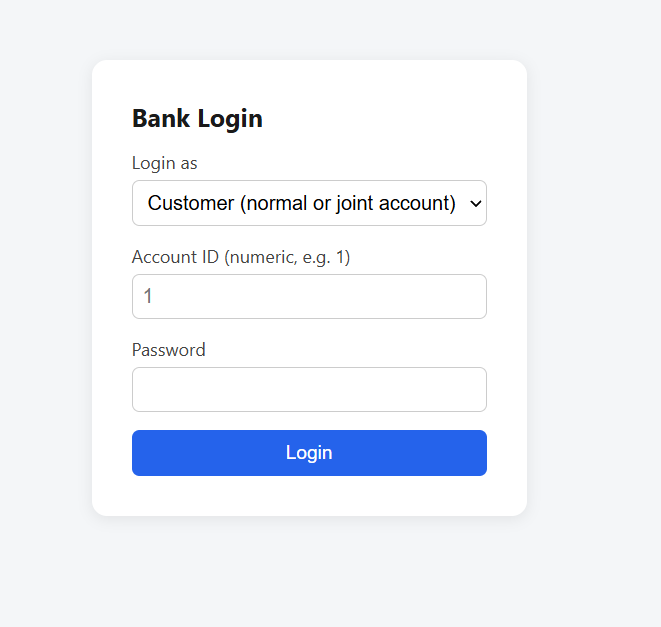
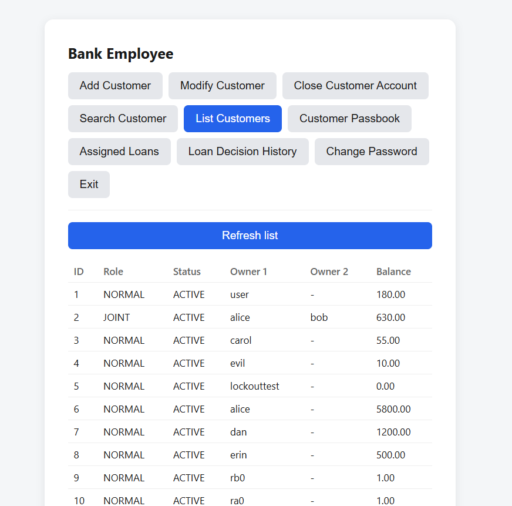
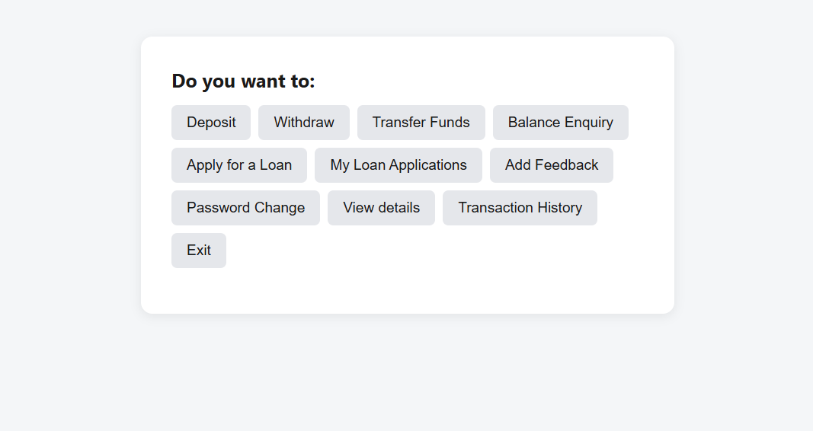
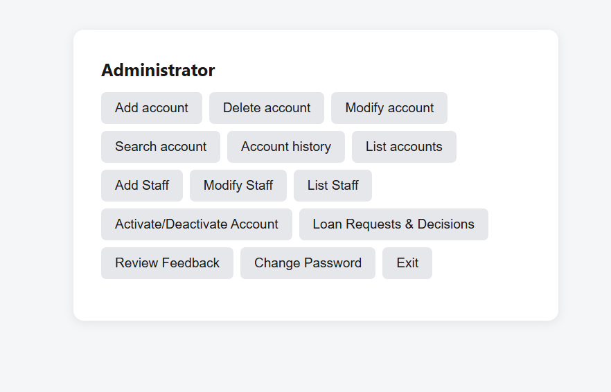
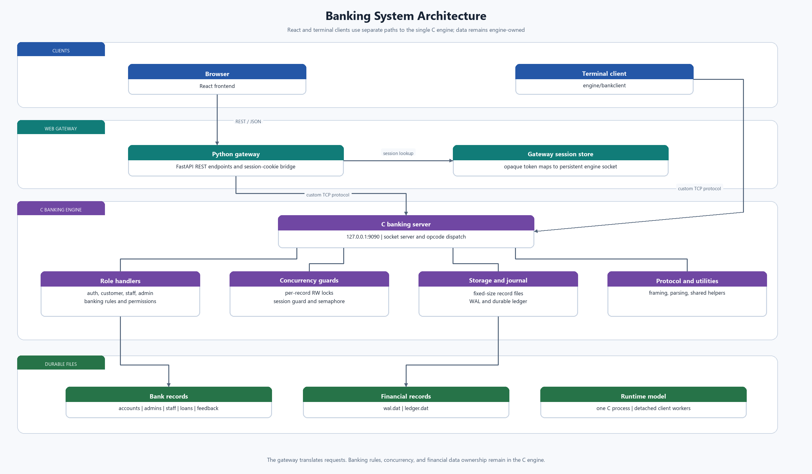
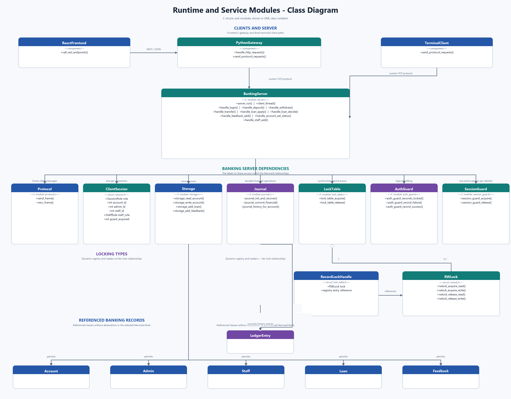
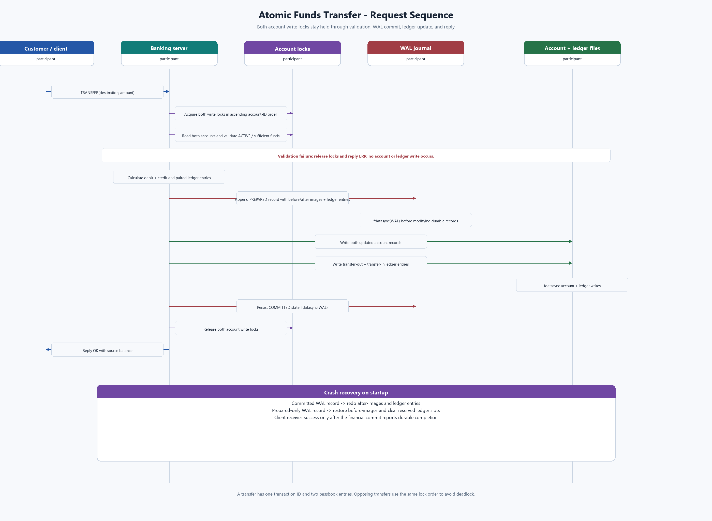
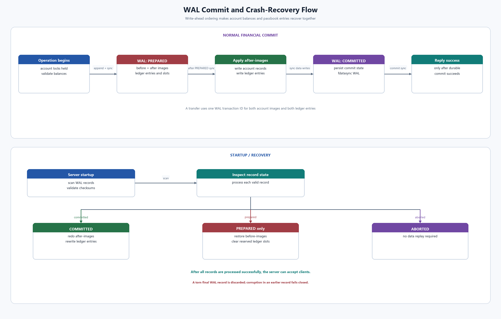
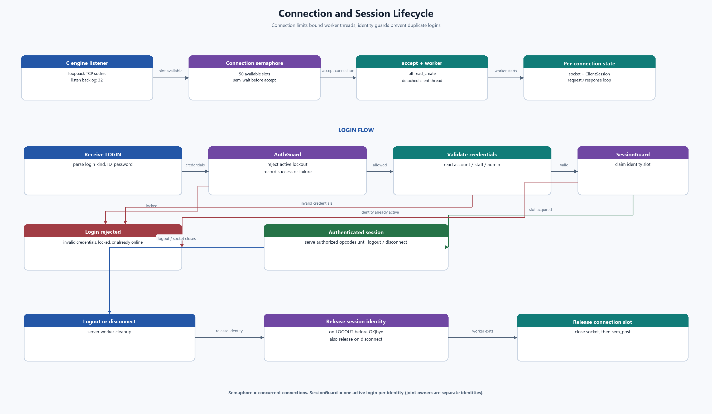

EG 301 · Operating Systems Mini Project · Submission Report
A three-tier banking application whose account files, concurrency, and locking are implemented from first principles in C over raw sockets and system calls — with a from-scratch readers–writer lock, a security review, and a complete design and protocol reference.
The brief asked for a multi-user banking system where account and transaction data live in files, customer normal/joint accounts are protected by login, and Employee, Manager, and Administrator capabilities are enforced server-side. Joint accounts use read/write locking; a socket server handles multiple clients concurrently; and file management, locking, threads, and connection control use low-level POSIX mechanisms rather than a database or RPC framework.
On top of that brief, this implementation adds a React/FastAPI presentation layer without diluting the C engine's responsibility for any of the above, and treats "banking system" as license to hold the code to a security standard beyond what the assignment strictly requires: a dedicated security review found and fixed four real vulnerabilities, described in Section 6.
The system is three separate processes, each owning one concern:
Login screen, user menu, admin dashboard. Talks only to the gateway.
FastAPI. Zero banking logic — translates JSON to the engine's wire protocol and back.
Owns accounts.dat, admins.dat, all locking, all concurrency, all IPC. Runs standalone.
This division matters for grading: the gateway is a deliberately "dumb" pipe (see gateway/app/main.py) so that every requirement in the brief is satisfiably demonstrated inside the C engine alone — engine/bankclient is a second, independent client that exercises the exact same protocol with no Python or browser involved.
Accounts and admins are stored as fixed-size binary records in accounts.dat / admins.dat, addressed directly by id (offset = id × sizeof(record)) — there is no index and no database library. A joint account is a single record holding two owner name/password-hash slots that share one balance field, which is what makes both holders' deposits and withdrawals contend on the exact same lock.
Each lettered item from the assignment brief, mapped to where it's implemented:
| Item | Requirement | Implementation | |
|---|---|---|---|
| a | Account/transaction data in files | Fixed-size records via open()/pread()/pwrite(); financial WAL and durable ledger.dat passbook |
done |
| b | Login system for account holders | OP_LOGIN, checked against the stored password hash |
done |
| c | Password-protected admin access | Separate admins.dat + ADMIN login kind, gated role checks on every admin opcode |
done |
| d | Customer, Employee, Manager, and Administrator logins | Customer normal/joint account records, separate Employee and Manager ID ranges in staff.dat, and Administrator records in admins.dat |
done |
| e | Admin add/delete/modify/search | OP_ADMIN_ADD/DELETE/MODIFY/SEARCH, plus an added OP_ADMIN_LIST |
done |
| f | Post-login menu (deposit/withdraw/balance/password/view/exit) | Implemented identically in engine/bankclient (CLI) and the React user dashboard |
done |
| g | Read lock for view, write lock for deposit/withdraw on joint accounts | Hand-rolled readers–writer lock, one per account — see Section 4 | done |
| h | Socket server, concurrent clients | socket()/bind()/listen()/accept() + thread-per-client |
done |
| i | Raw syscalls: process, file, locking, threads, IPC | pread()/pwrite()/fdatasync(), hand-rolled lock, pthread_create(), POSIX connection semaphore |
done |
The obvious way to satisfy item (g) is fcntl()/flock() record locking — but that is the OS's pre-built locking service, which defeats the point of a project about implementing OS mechanisms yourself. Instead, engine/src/rwlock.c hand-rolls the classic writer-priority readers–writers algorithm out of lower-level primitives: a mutex and two condition variables, not pthread_rwlock_t either.
void rwlock_acquire_write(RWLock *lock) {
pthread_mutex_lock(&lock->mutex);
lock->waiting_writers++;
while (lock->active_writer || lock->active_readers > 0)
pthread_cond_wait(&lock->writer_ok, &lock->mutex);
lock->waiting_writers--;
lock->active_writer = 1;
pthread_mutex_unlock(&lock->mutex);
}
The lock table creates per-record RWLock entries on demand and removes idle entries when their final borrower releases them. Balance-reading opcodes (BALANCE, VIEW_DETAILS, ADMIN_SEARCH) take a read lock; anything that mutates a record takes a write lock for the entire read-modify-write sequence, which is exactly what prevents the lost-update race proven in Section 5.
The server's accept() loop spawns a detached pthread_create() worker per client connection, with a POSIX counting semaphore limiting simultaneously served connections to 50. Each worker owns one connection and session; disconnect cleanup releases its session-guard slot and connection slot. The C engine is a modular single process; the Python gateway and React UI are separate processes, but neither contains banking rules.
All record I/O goes through pread()/pwrite() rather than fopen()/fread()/fwrite() — and rather than lseek()+read()/write(), too. The account file's descriptor is shared across every client thread, so a seek-then-read pair could race against another thread's seek; positioned I/O makes each access atomic without needing a separate lock just to protect the file offset.
A correct-looking lock is not the same as a proven one. Both joint-account holders were made to fire 250 +1 deposits each — 500 concurrent read-modify-write operations against the exact same record — and the final balance was checked against the arithmetic answer:
Zero lost updates across 500 overlapping write-lock acquisitions is the actual evidence that the hand-rolled lock's mutual exclusion is correct — not just that it compiles.
Because this is (nominally) a banking system, the engine was re-read specifically hunting for ways a client could corrupt data or bypass a check, not just whether the happy path worked. Four real issues were found and fixed; all are covered by dedicated regression tests.
Impact — sending the literal string "nan" as a deposit amount permanently corrupted that account's balance to NaN, persisted to disk on the next write.
Root cause — atof("nan") returns NaN, and in C, NaN <= 0 is always false, so the guard if (amount <= 0) reject never caught it. "inf" similarly set the balance to Infinity.
Fix — replaced atof() with parse_amount(), a strtod()-based parser that explicitly rejects non-finite results and trailing garbage (engine/src/util.c).
Impact — a value containing the protocol's own | field separator silently shifted every field after it into the wrong slot, with no error returned (e.g. a value meant for one field ending up stored as another).
Root cause — split_fields() folds any extra | into the last field instead of rejecting the request.
Fix — every fixed-field opcode now checks the payload's exact | count before splitting at all, combined with an outright ban on |/; in any stored value.
Impact — login had no rate limiting; combined with small sequential account IDs, password guessing was unthrottled.
Fix — engine/src/auth_guard.c locks out an id for 30 seconds after 5 consecutive failed attempts, refusing further attempts without even checking the password — what actually stops a guessing loop, not just a delay.
Impact — the engine listened on 0.0.0.0 (every interface) despite only ever needing to talk to the gateway on the same host.
Fix — bind changed to 127.0.0.1 only.
Reasoning — the wire protocol is plaintext, and passwords are hashed with a hand-rolled FNV-1a (no salt), chosen deliberately to avoid an external crypto/TLS library rather than for real security. Acceptable only for a loopback-only coursework demo; deployment on a real network would require TLS and a proper password KDF. See Section 12 for possible future work.
Impact — closing a browser tab without clicking "Exit" left its engine-side socket (and logged-in session) open forever.
Fix — the gateway now runs a background reaper thread (session_store.start_reaper()) that closes any session idle for more than 15 minutes.
tests/test_engine.py. Coverage includes role-specific seed logins and staff-ID migration, account operations, locking and transfer concurrency, session enforcement, and security checks.
The frontend was also driven end-to-end in a real (headless) browser, not just type-checked:




Full instructions are in the repository's README.md; in short:
cd engine && make && ./bankserver # WSL/Linux — needs POSIX threads, semaphores, and sockets cd gateway && uvicorn app.main:app --port 8077 cd frontend && npm install && npm run dev
The engine can be exercised entirely on its own with engine/bankclient, independent of Python or the browser — useful for demoing the raw socket protocol directly.
This is a single-process coursework system with fixed-size files and small configured record limits. The following constraints are visible in the current implementation; they are engineering bottlenecks to measure and address before increasing the workload, not claims that a particular production throughput has been achieved.
| Constraint | Current behavior | Likely effect as workload grows | Practical next step |
|---|---|---|---|
| Serialized WAL writes | journal.c protects WAL append and commit updates with one process-wide mutex; each PREPARE and COMMIT persistence calls fdatasync(). |
Unrelated account transactions can hold distinct account locks, but still queue briefly for journal I/O. Slow storage or high write volume can make this shared journal path limit throughput. | Instrument mutex wait/hold time and sync latency first. If they dominate, implement group commit: batch independent durable log records into one sync while replying only after each transaction's commit is durable. Keep crash-recovery tests around every failure boundary. |
| Passbook history scan and visibility gate | A history request takes the ledger visibility gate exclusively, then scans ledger.dat backward until it finds up to 20 entries for the requested account. Writers hold the shared side of this gate for their financial transaction. |
A history query blocks financial commits while it scans; as the ledger grows or account activity becomes sparse, the scan may traverse many unrelated entries and lengthen that pause. | Measure scan length and pause duration. Add a durable per-account ledger index or segmented ledger with a recovery-safe checkpoint; preserve the current committed-only history guarantee and validate index rebuilding after crashes. |
| Linear record allocation and fixed capacities | New customer, staff, loan, and feedback IDs are allocated by scanning for an empty/deleted slot. Configured maxima include 1,000 accounts, 200 IDs per staff role, 1,000 loans, and 1,000 feedback records. | Creation and role changes do more reads as slots become occupied; scans for loans and feedback are also used by listing workflows. Fixed capacities eventually reject new records. | Maintain a recovery-safe free-slot index or bitmap for the current file format. If capacity must grow substantially, migrate to an indexed storage engine with an explicit migration and backup/restore plan. |
| Per-record durable writes | Storage synchronizes each record write. A transfer updates two account records and two ledger records, in addition to its WAL prepare/commit syncs. | Durability is simple to reason about, but multiple sync calls per transaction can increase latency, particularly on slower disks or mounted Windows/WSL filesystems. | Benchmark on the intended filesystem before changing durability semantics. Consider group commit or carefully batched writes, and retain tests proving success is never acknowledged before the transaction is recoverable. |
| Thread-per-connection concurrency ceiling | The accept loop creates a detached thread per accepted connection and a semaphore limits active connections to 50; additional connections wait in the listen backlog. | Thread stacks and scheduling add overhead; 50 slow or idle connections can occupy all service slots and delay new users. Increasing the limit alone would increase resource use rather than fix the architecture. | Add connection/worker occupancy metrics and idle/read timeouts. If load tests justify it, move to a bounded worker pool or event-driven I/O while preserving per-session isolation and backpressure. |
How to verify a bottleneck: capture request latency percentiles, transaction throughput, WAL mutex wait and fdatasync() latency, ledger entries scanned per history request, worker/semaphore occupancy, and allocation scan lengths. Run repeatable tests at increasing concurrency and dataset sizes on the target filesystem. Compare before/after results and rerun crash-recovery, transfer-conservation, and session-isolation tests. The table describes code-derived pressure points; it does not substitute for those measurements.
This section consolidates the system architecture, record model, runtime modules, locking, transfer, recovery, and session behavior into this report. The UML-style diagrams describe C structs and modules conceptually; the implementation is procedural C, not an object-oriented class hierarchy.


React frontend sends REST/JSON requests to the FastAPI gateway. The gateway associates a tab-scoped session token with a persistent engine connection and translates requests to the engine's framed TCP protocol. The C engine owns authentication, authorization, account operations, record locking, storage, the WAL, and transaction history. bankclient is an independent terminal client that speaks the same protocol directly to the engine.
| Area | Modules | Responsibility |
|---|---|---|
| Connection and dispatch | engine/src/server.c, engine/src/common/protocol.c | Loopback listener, bounded client workers, frame handling, role dispatch, and disconnect cleanup. |
| Authentication and access | roles/auth/auth.c, common/auth_guard.c, common/session_guard.c, common/role_access.c | Credential checks, failed-login throttling, one active session per identity, and server-side role policy. |
| Storage and synchronization | common/storage.c, common/lock_table.c, common/rwlock.c | Fixed-size file records, on-demand per-record lock registry, and readers-writer synchronization. |
| Banking operations | roles/customer/customer.c, roles/staff/employee.c, roles/staff/manager.c, roles/staff/shared.c, roles/admin/admin.c | Customer transactions, staff loan/account workflows, shared staff views, and administration. |
| Durability and passbook | common/journal.c | Financial WAL commit/recovery, loan WAL recovery, and committed ledger history. |
Records are stored in fixed-size binary files under engine/data/. IDs address records directly; there is no database engine or secondary index. Positioned pread()/pwrite() avoid races on a shared file descriptor's current offset.
| Record | File | Important fields and relationships |
|---|---|---|
Account | accounts.dat | account_id, normal/joint role, status, owner names and password hashes, shared balance. A joint account has two owners sharing one balance. |
Staff | staff.dat | Staff ID, Employee/Manager role, status, name, password hash. Employee IDs use slots 1..MAX_STAFF; Manager IDs use a separate range MAX_STAFF+1..2*MAX_STAFF, so each role can independently have ID 1. |
Admin | admins.dat | Administrator ID, status, name, and password hash. |
Loan | loans.dat | Applicant account ID, amount, purpose, status, assigned Employee ID, and deciding staff ID. Zero assignment/decision IDs indicate those steps have not occurred. |
Feedback | feedback.dat | Submitting account ID, status, review flag, and text. |
LedgerEntry | ledger.dat | Transaction ID, timestamp, account ID, owner name, operation, amount, resulting balance, and optional counterparty account ID. |
| Financial journal | wal.dat | Before/after account images and ledger entries for atomic deposit, withdrawal, and transfer recovery. |
| Loan journal | loan_wal.dat | Atomic loan decision/disbursement updates, including loan, account, and passbook changes. |
Relationships are stored as IDs rather than pointers: Loan.account_id refers to the applicant account, and a ledger counterparty is another account ID. A transfer creates a debit and a credit ledger entry linked by the same transaction ID. Deleted accounts are soft-deleted so audit and historical records remain available.
The engine does not use fcntl()/flock() or pthread_rwlock_t as the account lock implementation. Instead, rwlock.c implements a writer-priority readers-writer lock using a mutex and condition variables. lock_table.c creates locks on demand for account, staff, administrator, and loan records. Each caller holds a registry reference while waiting and using the lock; the final release removes and destroys an idle lock entry. Reads can coexist, while a writer excludes readers and other writers.
Account mutations hold a write lock for the full read-modify-write sequence. Unrelated records use distinct locks and can progress concurrently. Ledger append positions are reserved under a short mutex; a visibility lease prevents a passbook read from exposing an uncommitted transaction. The connection semaphore limits the engine to 50 served clients; it is separate from the per-identity session guard and per-record locks.


A financial operation records a durable PREPARED journal entry containing before-images, after-images, and the intended ledger records before applying data-file updates. After account and ledger writes are durable, the engine persists COMMITTED and only then reports success. On startup, recovery redoes after-images for committed records and restores before-images/clears reserved ledger slots for incomplete prepared records. The journal append/commit sections are serialized only as needed to preserve log ordering; account locks remain per-record. Loan approval uses loan_wal.dat to commit the loan decision, account credit, and passbook entry together.

The engine's session guard permits one active session per identity: customer identity is keyed by account and joint-owner slot; Employee and Manager have distinct role-qualified keys; Admin uses its own ID. A second login for the same identity is rejected. Explicit LOGOUT releases the guard before the reply is sent. A dropped socket releases it through worker cleanup. For browser sessions, the gateway closes an abandoned engine connection after 15 minutes idle; its reaper checks periodically, so the effective wait can be slightly longer. React stores the opaque token in tab-scoped sessionStorage so separate tabs do not replace each other's sessions.
The engine protocol is a small length-prefixed TCP protocol shared by the Python gateway and bankclient. It uses no RPC or serialization library.
[4-byte big-endian length][1-byte opcode][payload bytes...]
The length includes the opcode byte and payload. Requests use a plain |-delimited payload; responses use OK|<data> or ERR|<reason> on the request's opcode. The engine listens on 127.0.0.1:9090.
| Opcode | ID | Request payload | Successful response |
|---|---|---|---|
| LOGIN | 1 | KIND|id|password (USER, EMPLOYEE, MANAGER, ADMIN; legacy STAFF means EMPLOYEE) | Welcome message |
| DEPOSIT | 2 | amount | New balance |
| WITHDRAW | 3 | amount | New balance |
| BALANCE | 4 | Empty | Current balance |
| CHANGE_PW | 5 | old_password|new_password | Password changed |
| VIEW_DETAILS | 6 | Empty | Account details as key/value fields |
| LOGOUT | 7 | Empty | Bye; session guard released before reply |
| ADMIN_ADD | 8 | role|owner1_name|owner1_pw|owner2_name|owner2_pw|initial_balance | New account ID |
| ADMIN_DELETE | 9 | account_id | Deleted (soft-close) |
| ADMIN_MODIFY | 10 | account_id|field|value | Modified |
| ADMIN_SEARCH | 11 | account_id | Account details as key/value fields |
| ADMIN_LIST | 12 | Empty | Semicolon-separated active account records |
| TXN_HISTORY | 13 | Empty for USER; target account_id for staff/admin | Latest 20 committed entries, newest first |
| TRANSFER | 14 | to_account_id|amount | Sender's new balance |
| LOAN_APPLY | 15 | amount|purpose | New loan ID |
| LOAN_MY_LIST | 16 | Empty | Caller's loan applications |
| LOAN_ASSIGNED_LIST | 17 | Empty | Assigned loans for Employee; all assigned loans for Admin |
| LOAN_DECIDE | 18 | loan_id|APPROVE or loan_id|REJECT | Approved or rejected |
| LOAN_ASSIGN | 19 | loan_id|employee_id | Assigned |
| FEEDBACK_ADD | 20 | Feedback text | New feedback ID |
| FEEDBACK_LIST | 21 | Empty | Feedback records |
| ACCOUNT_SET_STATUS | 22 | account_id|ACTIVE or account_id|INACTIVE | Updated |
| STAFF_ADD | 23 | EMPLOYEE|name|password or MANAGER|name|password | New staff ID in that role's namespace |
| STAFF_MODIFY | 24 | role|staff_id|field|value | Modified |
| STAFF_LIST | 25 | Empty | All staff records |
| LOAN_PENDING_LIST | 26 | Empty | Unassigned pending loans |
| LOAN_DECISION_HISTORY | 27 | Empty | Non-empty loans with status and assigned Employee |
List entries are semicolon-separated; fields within an entry are pipe-separated key=value pairs. Transaction-history entries are positional: timestamp|account_id|owner|operation|amount|balance|counterparty. Counterparty is - for deposit/withdrawal and the other account's ID for a transfer. For a joint account, the owner field records which holder performed the transaction.
| Capability | Customer | Employee | Manager | Admin |
|---|---|---|---|---|
| Deposit, withdraw, transfer, balance, apply for loan, add feedback | Own account | — | — | — |
| Add/modify/search/list customer accounts | — | Yes | Search/list only | Yes |
| Close customer account | — | Yes | — | Yes |
| View any customer's transaction history | — | Yes | — | Yes |
| View assigned loans and decide | — | Assigned loans only | — | All assigned loans |
| Assign loans, review feedback, change account status, view pending loans/history | — | — | Yes | Yes |
| Add/modify staff; list staff | — | — | List only | Yes |
Authorization is enforced by the engine on every operation; the client-provided role or UI menu is never treated as an authority. Customer transaction and loan requests are scoped to the authenticated account. A customer can name a destination for a transfer but cannot use that destination to access its data or perform other operations.
| or ;; the protocol has no escaping mechanism. Fixed-field requests validate the exact delimiter count before splitting.The project demonstrates a complete local banking workflow with role-based access, concurrent record operations, WAL recovery, and a web interface. It is still a coursework prototype, not software suitable for real financial data. Future work should first address measured scaling constraints and operational safety, then strengthen deployment security:
These are concrete follow-ups to the limitations described in Section 9 and the security trade-offs in Section 6. They are proposed work, not features claimed to be implemented. Within its coursework scope, the current system provides an end-to-end banking flow while keeping core banking rules and durable account state inside the C engine.